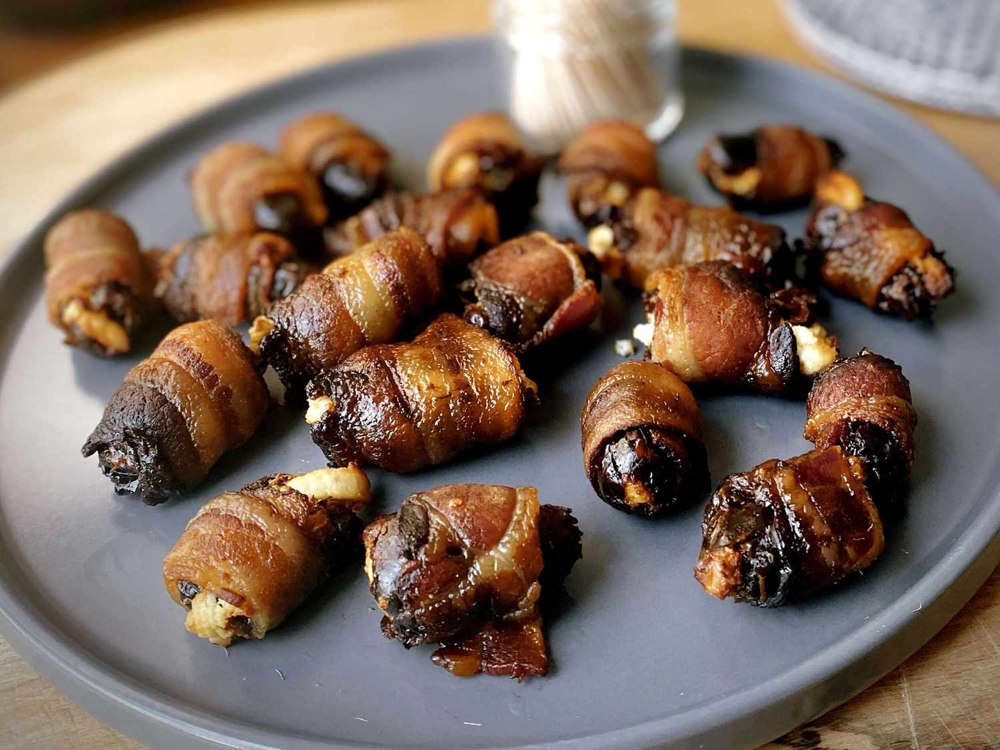

Home
Bacon-Wrapped Dates

Description
Bacon-Wrapped Dates are a delicious appetizer that combines the sweet, chewy texture of dates with the savory, crispy texture of bacon. These bites are perfect for parties, gatherings, or as a snack on a quiet evening.
The combination of dates and bacon creates a unique flavor profile that is both sweet and savory, while the bacon adds a satisfying crunch and smoky flavor.
Ingredients
- Dates: Use pitted dates for easy wrapping. You can use Medjool dates for their rich sweetness.
- Bacon: Use thick-cut bacon for better texture and flavor. You can also use turkey bacon for a leaner option.
- Optional: A sprinkle of brown sugar or cinnamon can enhance the sweetness and add extra flavor.
Steps
- Preheat the oven to 375°F (190°C).
- Pit the dates and cut them in half lengthwise.
- Wrap each date half with a strip of bacon, securing with a toothpick if needed.
- Place the wrapped dates on a baking sheet lined with parchment paper.
- Bake for 10-15 minutes until the bacon is crispy and golden brown.
- Remove from oven and let cool slightly before serving.